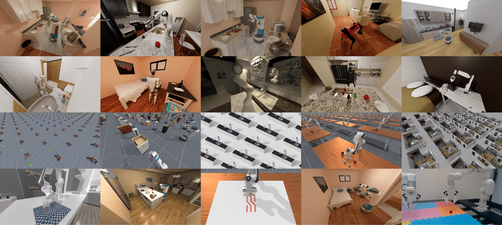
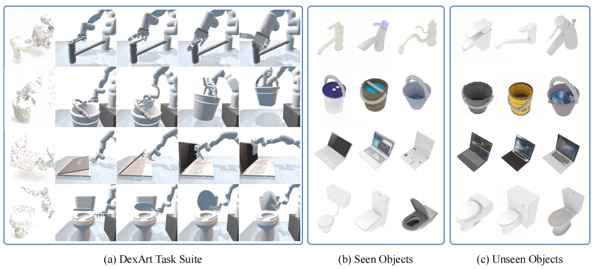
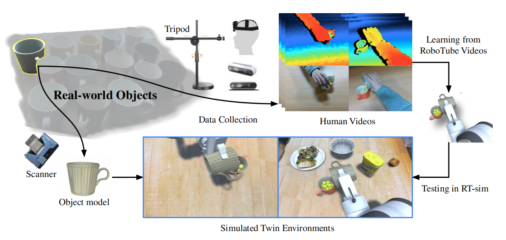
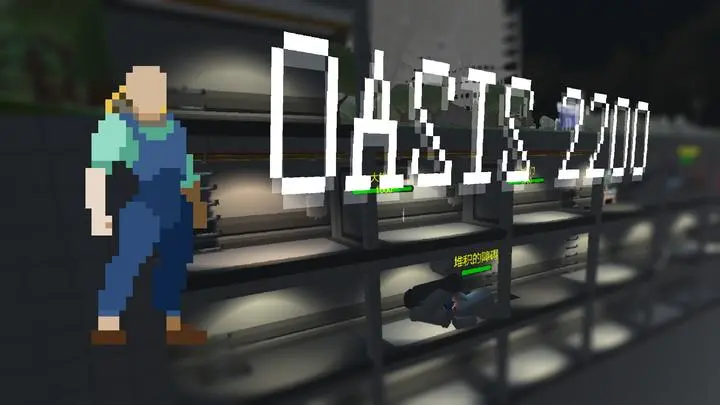

News
- [2025/03] 🎉 ManiSkill3 is accepted at RSS'25 and as an oral presentation at the ICLR Robot Learning Workshop.
- [2024/05] 🎉 ManiSkill3 Beta has been released! State-of-the-art fully open-source robotics simulation with the fastest parallel visual simulation, 10-1000x faster than other simulators.
- [2023/11] 🎉 One paper wins the outstanding paper award at the Language Robotics workshop CoRL 2023 and gets accepted to ICLR 2024 as Spotlight.
- [2023/08] 🎉 I join CMU Robotics Institute as a graduate student.
- [2023/07] 🎉 I win the 2nd place in all three tracks of ManiSkill2 Challenge.
- [2023/05] 🎉 One paper gets accepted to CVPR 2023.
- [2022/09] 🎉 One paper gets accepted to CoRL 2022 (Oral).
Intro
I recently graduated with a Master's degree from the Robotics Institute at Carnegie Mellon University, where I worked with Prof. Abhinav Gupta on foundation models. I previously worked at Skild AI with Prof. Deepak Pathak. During my graduate studies, I also collaborated with Prof. Xiaolong Wang at UC San Diego, focusing on robotic manipulation and computer vision. Prior to CMU, I conducted research at MVIG Lab, Shanghai Jiao Tong University, under the supervision of Prof. Cewu Lu and Dr. Wenqiang Xu.
I received offers from Princeton University and University of Illinois at Urbana-Champaign for Fall 2025 PhD programs, but decided to pursue opportunities in industry. My research interests include generative AI for robotic perception and manipulation, reinforcement learning and imitation learning, visual representation learning using Internet-scale data.
Research
2024

ManiSkill3: GPU Parallelized Robotics Simulation and Rendering for Generalizable Embodied AI
Stone Tao, Fanbo Xiang, Arth Shukla, Yuzhe Qin, Xander Hinrichsen, Xiaodi Yuan, Chen Bao*, Xinsong Lin, Yulin Liu, Tse-kai Chan, Yuan Gao, Xuanlin Li, Tongzhou Mu, Nan Xiao, Arnav Gurha, Zhiao Huang, Roberto Calandra, Rui Chen, Shan Luo, Hao Su.
Robotics: Science and Systems, RSS 2025
ICLR 2025 Workshop on Robot Learning (Oral)
[Paper]
[Website]
[Code]
2023


GenSim: Generating Robotic Simulation Tasks via Large Language Models
Lirui Wang, Yiyang Ling*, Zhecheng Yuan*, Mohit Shridhar, Chen Bao, Yuzhe Qin, Bailin Wang, Huazhe Xu, Xiaolong Wang.
International Conference on Learning Representations (Spotlight), ICLR 2024
CoRL 2023 Workshop on Language Grounding and Robot Learning (Best Paper)
[Paper]
[Website]
[Code]
[Demo]
2022

Project
2021

Oasis 2200: An Online Multiplayer Battle Game
Chen Bao*, Boyang Zheng*, Zihong Lin*, Chen Liang*
Course Project of SE128 @ SJTU, 2021
[TapTap]
[Website]
[APK Download]
Selected Awards and Honors
- 2023: Shanghai Outstanding Graduate (5%)
- 2023: The Second Prize in ManiSkill2 Challenge (6000USD$)
- 2022: Yingjiao Scholarship (12000RMB¥)
- 2021: Shaoqiu Scholarship (10000RMB¥)
- 2021: Merit Student of Shanghai Jiao Tong University
- 2020: The First Prize of RoboMaster 2020 University Championship
- 2020: Junyuan Scholarship (3000RMB¥)
- 2018: The Second Prize of National Olympiad in Informatics in Provinces, Shanghai, China
Credit: web source from Dr. Songfang Han